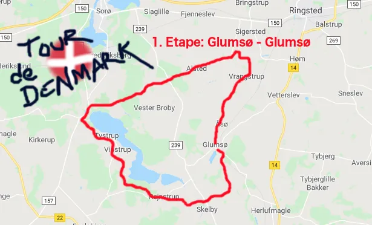

1. etape: Glumsø – Glumsø

Tema: Tour de Danmark
1. etape af Tour de Danmark, Glumsø – Glumsø, var den syd-midtsjællandske Tystrup-Bavelse søerne rundt.
En utrolig smuk tur med mange sceniske steder: Broerne over Susåen ved Skelby og Vrangstrup, bakkerne ved Vinstrup, udsigtspunkterne rundt om søerne.

Etapestarten blev fremrykket til kl. 05.15, for at undgå sammenstimling af tilskuere på Col de Tystrup. Squadra Moltenis rytter Kristian Blume vandt etapen i suveræn stil – og melder om gode ben, storform og ro i sjælen.
Forza Molteni
1. Etape:
1. Kristian Blume, Squadra Molteni
Klassement:
1. Kristian Blume, Squadra Molteni
Hold:
1. Squadra Molteni